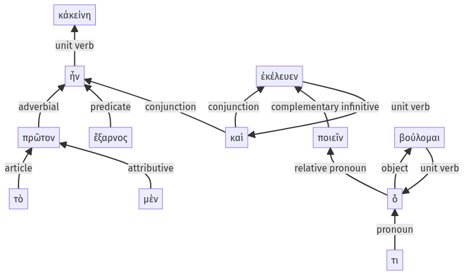

Lysias, Oration 1, 1.19.1-1.19.12a
1.18.63-1.18.69a | 1.19.13-1.19.15a
Sentence 48
1.19.1-1.19.12a
κἀκείνη τὸ μὲν πρῶτον ἔξαρνος ἦν, καὶ ποιεῖν ἐκέλευεν ὅ τι βούλομαι:
1 τὸ μὲν πρῶτον ἔξαρνος ἦν
1 καὶ ποιεῖν ἐκέλευεν
2 ὅ τι βούλομαι
κἀκείνη τὸ μὲν πρῶτον ἔξαρνος ἦν, καὶ ποιεῖν ἐκέλευεν ὅ τι βούλομαι:
Highlighting:
- connecting words
- unit verb
- subject
- object
Color code:
- Independent clause (level 1, linking verb)
- Independent clause (level 1, transitive verb)
- subordinate clause (level 2, transitive verb)
